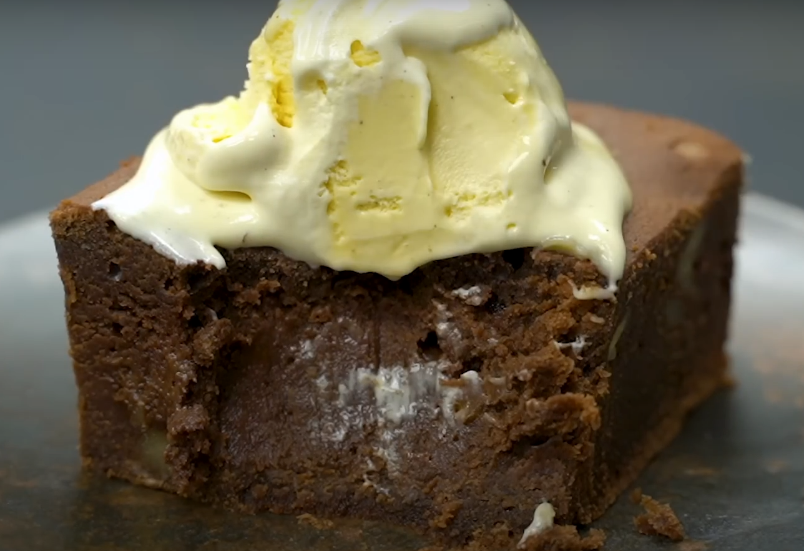

Home
Brownie Chocolate Recipe

Description
Brownies are a delicious chocolate dessert that are rich, fudgy, and perfect for any occasion. They can be served plain or with toppings like nuts or ice cream.
Ingredients
- 160g of butter
- 140g of chocolate
- 2 tablespoons Of sugar
- 120g of condensed milk
- 3 eggs and 1 pich of Salt
- 1/2 cup all-purpose flour
- 30 or 40 g of wainunts
- 80g of flour
- 1/2 cup chocolate chips (optional)
Steps
- Preheat the oven to 350°F (175°C).
- Melt the butter and chocolate together in a saucepan over low heat.
- In a bowl, mix the melted chocolate with sugar, condensed milk, and eggs.
- Add flour and salt, and mix until combined.
- Fold in nuts and chocolate chips if using.
- Pour the batter into a greased baking dish.
- Bake for 20-25 minutes or until a toothpick comes out clean.
- Let cool before cutting into squares.
Tips
- For extra fudgy brownies, underbake them slightly.
- Try adding a pinch of espresso powder to enhance the chocolate flavor.
- Serve with a scoop of vanilla ice cream for a delicious dessert.
- Store brownies in an airtight container to keep them fresh.
- Experiment with different mix-ins like caramel or peanut butter chips.
- For a gluten-free version, substitute all-purpose flour with almond flour.
- Brownies can be frozen for up to 3 months. Just wrap them tightly in plastic wrap.
- Cut brownies into squares after they have cooled completely for clean edges.